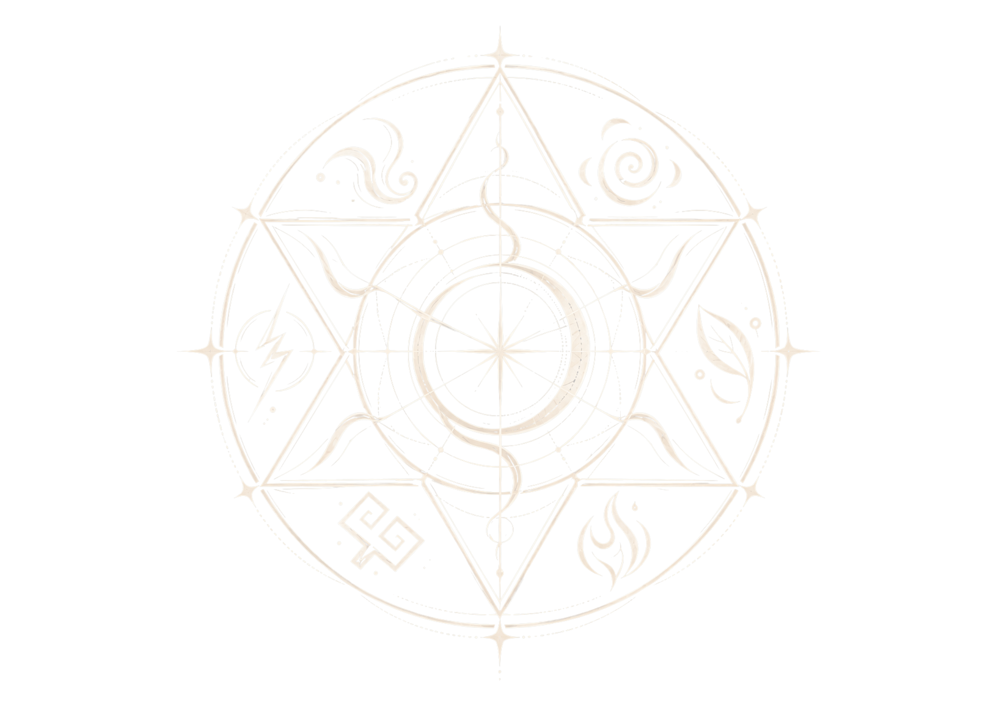

WHITE MAGIC ART STUDIO


✦ 點 擊 以 上 標 題 翻 開 序 章 ✦
當滾滾雷聲劃破夜空時，你可曾想過，那或許不是暴雨將至的預兆，而是ㄧ群隱密的人正在黑夜中為你與惡魔浴血奮戰？當滔天巨浪洶湧翻騰時，你可曾想過，那或許不是惡劣的天氣所致，而是他們正乘風破浪，為了守護這座世界而奔赴戰場？在他們之中，有人能憑藉意念撫平致命的傷口，有人能徒手移山倒海。他們從不公開現身，卻曾在歷史的陰影裡悄悄扭轉了無數文明的命運。其真實身份早已湮沒在歲月的塵埃中，唯有一個古老的稱呼流傳至今——聖術師。